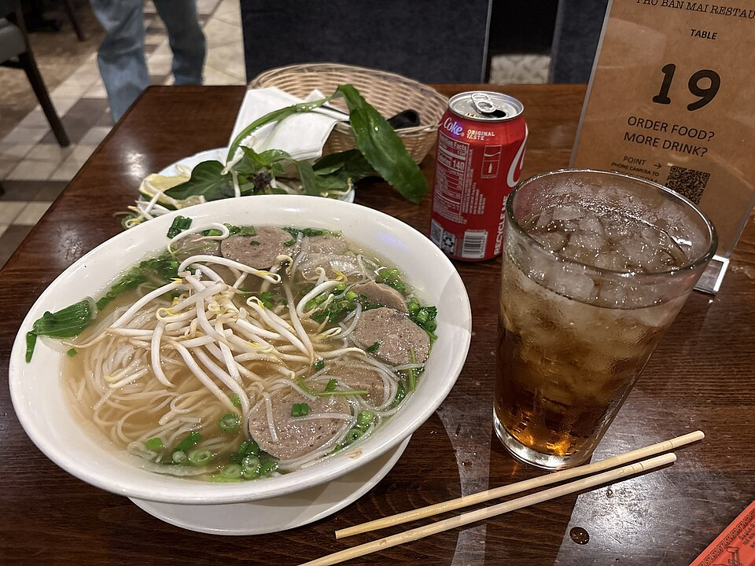

Chasing the Perfect Sunset in Santorini
Forget Oia's crowds — I found three quiet cliffside spots where the sky turns every shade of peach and nobody's elbowing for a photo.
Read More →Tap a pin to read the story behind each place.
Fresh from the road.
Forget Oia's crowds — I found three quiet cliffside spots where the sky turns every shade of peach and nobody's elbowing for a photo.
Read More →
FoodFrom 5am broth stalls to tiny plastic stools in the Old Quarter, here's every bowl I ate and the one I'm still dreaming about.
Read More → Adventure
Adventure
An alarm at 4am, a scooter ride up into the highlands, and Ulun Danu Bratan rising out of the lake mist.
Read More →It started with a one-way ticket to Lisbon and a promise to myself to say yes more often. Years later, I'm still saying yes — to the street-food stall with no menu, the overnight train, and the detour that turns into the best day of the trip.
This is where I share the places, plates and people that stayed with me — so you can find your own corner of the world.